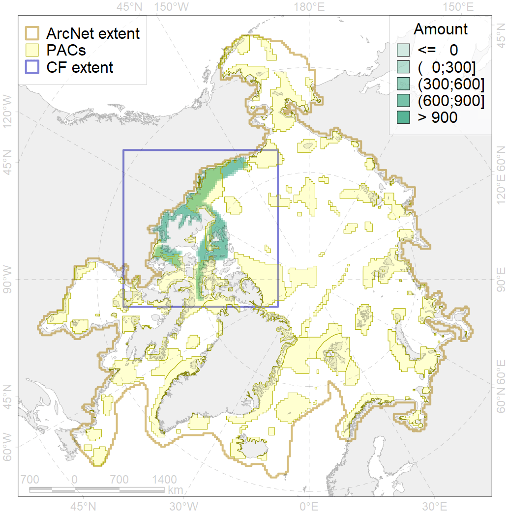
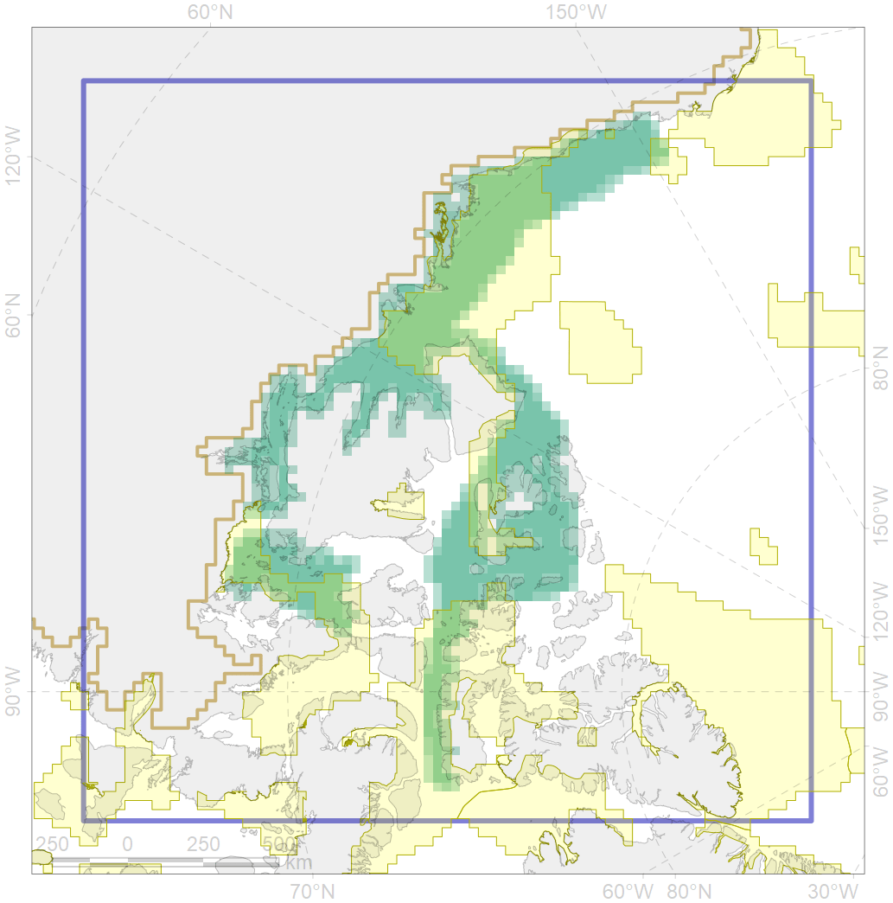

4062

| CF code | 4062 |
| CF name | Range of the White Sea eelpout (Lycodes marisalbi), American population |
| Time Period | 1940s-2010s |
| Source(s) | Mecklenburg et al., 2018; Coad Reist, 2018 |
| Seasonality | Jan-Dec |
| Depth Horizon | 6-335 m |
| Methodology | Compiled from literature sources based on field observations |
| Use Restrictions | Open sources |
| Author Name | N. Chernova |
| Notes | The map is based on tha data from: Mecklenburg et al., 2018, with additions from Coad, Reist, 2018 |
| Scenario’s Target | 0.06 |
| Target Achievement | 0.431 (Scenario: 718.5%) |
| PAC | Share of the Total Amount within the PAC | Share of the Target Achievement for the ArcNet | PAC’s Contribution to the Target Achievement |
|---|---|---|---|
| 52 | 6.1%6.1% | 98.8%98.8% | 13.8%13.8% |
| 60 | 0.6%0.7% | 4.3%4.7% | 0.6%0.7% |
| 61 | 0.1% | 2.5% | 0.3% |
| 62 | 25.8%26.4% | 404.8%409.1% | 56.3%56.9% |
| 63 | 2.4%2.4% | 30.4%31.2% | 4.2%4.3% |
| 65 | 6.4%6.5% | 78.9%80.0% | 11.0%11.1% |
| inner | 41.4%42.2% | 619.6%626.3% | 86.2%87.2% |
| outer | 58.6%61.9% | 99.0%143.1% | 13.8%19.9% |
| † supplement values are for area consistence whereas principal values are for Accenter compatible gridded stats |